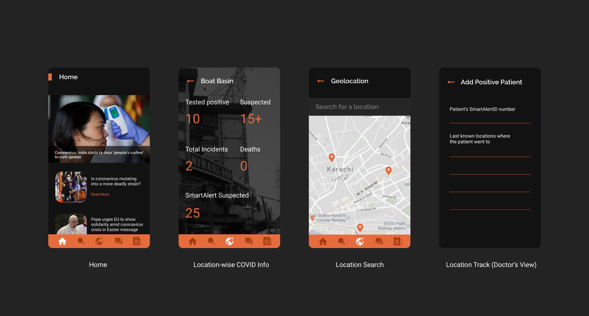

During the tough times of the pandemic, one of the main challenges was to identify COVID-19 affected areas. Such information was vital for the medical staff to determine and stop the chain transmission of the virus and reach concerned people immediately for COVID testing. The same information was also helpful for the general audience to avoid close contact with people who have COVID-19.
To research the given scenario, we looked at one of the applications developed by the government of Pakistan and identified possible opportunities and gaps.
My Role
Research
Audience
Healthcare Staff
General Audience
"COVID-19 Gov PK", developed by the government of Pakistan, a portal containing COVID-related information. It provides city-wise affected count and the nearest labs and test centers.
The availability of localized information
While the summarized version helps, sometimes localized data such as statistics on nearby locations is crucial for the users traveling in an emergency. According to our research, several users took the warnings seriously when informed of the nearby situations. It also helped them make better decisions.
The validity and authentication of such information
In some instances, users have reported the data as misleading and false. There is no method to authenticate the validity of the information making it more challenging due to widespread false news.
The time of such information
The app failed to provide real-time updates. Many users reported that the data was never updated in various locations as well. One of the reasons for the delay in updating the information is the lack of proper infrastructure to manage data and having no checks on the actual active cases in hospitals.
How can we help people get authenticated information rapidly regarding COVID-affected areas of Pakistan?
Contact Tracing is one of the most effective methods to reduce the spread of the virus. According to the available information on CDC’s website, contact tracing starts when a suspected patient is tested positive for the virus.
We can use this process to mark all the possible locations where the COVID patient might have gone before coming to the hospital. A ballpark figure is then synthesized and re-checked with the available data to obtain the correct amount of people affected in a specific area.
Workflow
Detailed workflow / user journey
Application Design
UI Designs for the application
A Peer-to-peer network
To tackle the infrastructure issue and provide the most updated information, we decided to make the application decentralized. We relied heavily upon the authenticated hospitals’ data to compare the statistics along with the frequency at which the network received data to manage the authenticity of the statistics.
Authentication of medical staff
Authentication of medical staff is a crucial step in our data validation process. We use the data from the hospitals to compare the incoming reports and manage the authenticity. The authentication process requires an admin who manages the accounts so that only authenticated personnel can validate the information.
Readily available local data with Snapchat like heat-maps
One of the gaps found while researching existing applications is the availability of local data. We decided to provide this information as heat maps inspired by Snapchat. By providing localized information, users will be able to take caution when traveling to affected locations.
Design Optimization
We identified design optimization as one of the crucial steps to improving the authenticity of the information. By leveraging the new ideas in blockchain technology, we can improve applications' performance and enhance the network created.